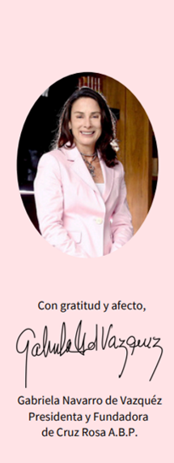

Órgano de gobierno, representación y administración encargado de velar por el cumplimiento de la misión de la organización y la gestión responsable de sus bienes.
Asegurar la correcta administración, conservación y manejo de los bienes y fondos de la institución.
Velar porque todas las actividades se ciñan a la voluntad del fundador y a los estatutos de la organización.
Ejercer la representación de la institución ante autoridades e instituciones públicas y privadas.
Aprobar las actividades, presupuestos, estados financieros y proyectos estratégicos de la organización.
Rendir cuentas de su administración a los patronos entrantes y a las autoridades pertinentes.
Seleccionar y vigilar que el personal tenga la capacidad adecuada para las funciones asistenciales.
Implementar códigos éticos y de buena gobernanza para asegurar el uso eficiente de recursos.
Representar y liderar la asociación en el cumplimiento de su objeto social apegado a los requerimientos legales y reglamentarios.
Auxiliar en todo momento a la Presidencia en el cumplimiento de sus funciones; en su ausencia asume las responsabilidades de la Presidenta.
Responsable sobre cumplimiento estatutario, custodia documental y enlaces institucionales.
Responsable de la salud financiera, transparencia y rendición de cuentas. Custodiar fondos y misión.
Miembros con voz y voto, clave para la toma de decisiones, supervisión y transparencia.
Gabriela Navarro G.
Eduardo Vázquez Arroyo C.
Gabriela Navarro G.
Norma A. Herrera R.
Cristina A. Gutierrez V.
Norma A. Cavada M.
Eduardo Vázquez Arroyo C.
Ernesto Milmo R.
Andrés Ochoa B.
Artemio J. Garza R.
María Medellín
Edmundo J. Gil G.
Betty Zybert K.
Karla M. Garza S.

Gabriela Navarro V.
Presidenta y Fundadora de Cruz Rosa A.B.P.
Queridos amigos y amigas,
Con gran emoción y profundo compromiso, me dirijo a ustedes en este momento tan especial para Cruz Rosa que cumple 20 años de dar apoyo día con día. Es un honor y privilegio estar nuevamente al frente de esta causa que tanto significa para mí y para todos quienes formamos parte de esta asociación.
Cruz Rosa en su línea del tiempo ha pasado por grandes retos y aprendizajes, pero también de logros significativos gracias a su generoso apoyo. A partir de 2024 les informamos que estaremos trabajando paralelamente en una nueva Planeación Estratégica, buscando la mejora y fortalecimiento de nuestros programas.
¡México nos necesita! Unamos esfuerzos y llenemos nuestros corazones apoyando a Cruz Rosa, una organización con 20 años de experiencia y dedicación al prójimo. Los invitamos a contribuir con su generosidad a través de becas, tiempo, donaciones y aportaciones de ideas.